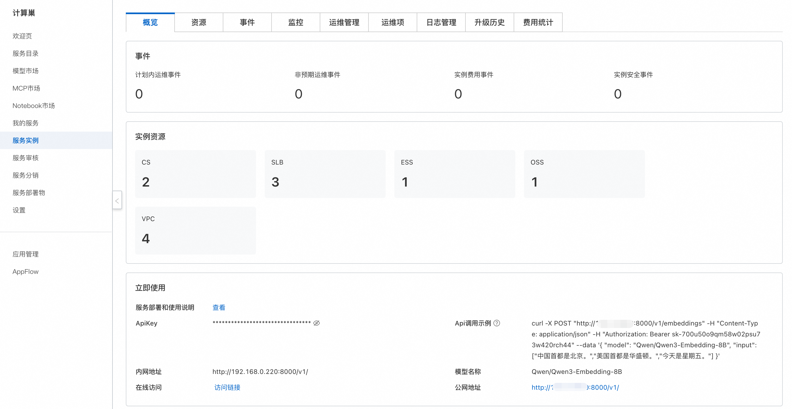
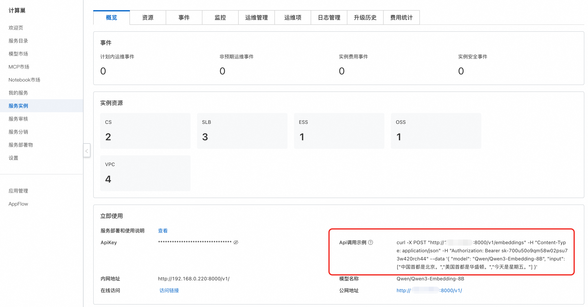

Qwen3 Embedding Model Usage Guide
Introduction
The Qwen3 Embedding model series is the latest proprietary model from the Qwen family, specifically designed for text embedding and ranking tasks. Built upon the dense foundation models of the Qwen3 series, it offers comprehensive text embedding and reranking models in various sizes (0.6B, 4B, and 8B). The series inherits the exceptional multilingual capabilities, long-text understanding, and reasoning skills of its base models. Qwen3 Embedding demonstrates significant improvements across multiple text embedding and ranking tasks, including text retrieval, code retrieval, text classification, text clustering, and bilingual text mining.
Usage Instructions
After completing the model deployment, you can view the usage methods on the ComputeNest service instance overview page, which provides API call examples, private network access address, public network access address, and ApiKey. The following sections will introduce how to access and use the service.

API Calls
Curl Command Call

You can directly use the API call example from the service instance overview page for Curl command calls. The specific structure for calling the model API is as follows:
Where ${ServerIP} can be filled with the IP address from either the private or public network address, ${ApiKey} is the ApiKey, and ${ModelName} is the model name.
curl -X POST http://${ServerIP}:8000/v1/embeddings \
-H "Content-Type: application/json" \
-H "Authorization: Bearer ${ApiKey}" \
-d '{
"model": "${ModelName}",
"input": [
"The capital of China is Beijing.",
"The capital of the United States is Washington.",
"Today is Friday."
]
}'
Python Call
Below is a Python example code:
Where ${ApiKey} needs to be filled with the ApiKey from the page; ${ServerUrl} needs to be filled with the public or private network address from the page, without the /v1 suffix.
import requests
import json
import math
url = '${ServerUrl}/v1/embeddings'
token = '${ApiKey}'
def cosine_similarity(v1, v2):
"""Calculate cosine similarity between two vectors"""
dot_product = sum(x * y for x, y in zip(v1, v2))
norm_v1 = math.sqrt(sum(x**2 for x in v1))
norm_v2 = math.sqrt(sum(y**2 for y in v2))
if norm_v1 == 0 or norm_v2 == 0:
return 0.0
return dot_product / (norm_v1 * norm_v2)
# Build request body
request_body = {
"input": [
"The capital of China is Beijing.",
"The capital of the United States is Washington.",
"Today is Friday."
],
"model": "Qwen3-Embedding-8B",
# "dimensions": 4096 # Optional: specify output dimensions
}
# Send request
headers = {"Authorization": token}
resp = requests.post(url=url, headers=headers, json=request_body)
# Parse response
embeddings_data = json.loads(resp.content.decode())["data"]
embeddings_0 = embeddings_data[0]["embedding"]
embeddings_1 = embeddings_data[1]["embedding"]
embeddings_2 = embeddings_data[2]["embedding"]
# Calculate similarity
sim_0_1 = cosine_similarity(embeddings_0, embeddings_1)
sim_0_2 = cosine_similarity(embeddings_0, embeddings_2)
sim_1_2 = cosine_similarity(embeddings_1, embeddings_2)
# Output results
print(f"similarity({embeddings_data[0]['index']},{embeddings_data[1]['index']}): {sim_0_1:.6f}")
print(f"similarity({embeddings_data[0]['index']},{embeddings_data[2]['index']}): {sim_0_2:.6f}")
print(f"similarity({embeddings_data[1]['index']},{embeddings_data[2]['index']}): {sim_1_2:.6f}")